The Solana Vanishing Act
The Solana Vanishing Act
I got a Macintosh Performa 200 for reasonably cheap, but in a pretty poor condition. It was sold as working, but I expected that some recapping work might be needed. Unfortunately when it got to me, it wasn't working any more. Then the seller admitted that it took a few minutes for it to boot after powering it on. From this it was clear that it was already on the verge of dying. It was dirty inside and outside, so it was very much due to give it some love. He offered to either buy it back or pay back half the price, which was a fair deal. I decided to keep and renovate it.
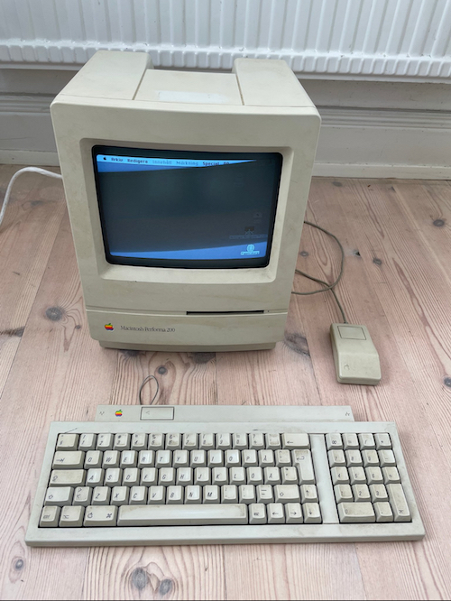
The first thing I needed was a thin and long screwdriver with a Torx T15 head. I found a cheap kit from Dibotech that has an extender. It's needed for accessing the top two screws, that are deep down in the handle cavity of the case.
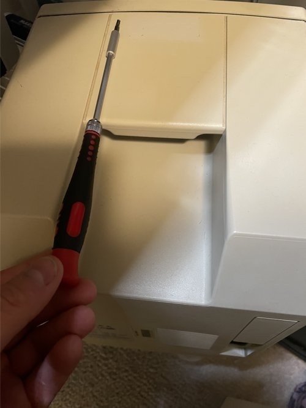
After opening it up, the first thing I did was to turn it on and measure the voltages on the hard drive connector. There should be 5 and 12V there. There wasn't, the analog board was supplying just 9.2 and 3.5V. It was clear that the analog board needed a recap badly.
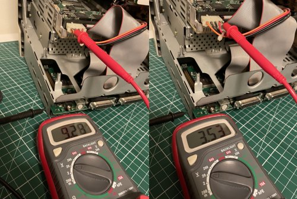
Before going any further, I put on some rubber gloves, unplugged the Mac from mains and discharged the CRT with a screwdriver and a cable attached to it and the ground point on the case. Then I gradually disassembled the whole thing. First I removed the logic board, then the analog board, the hard drive and floppy disk bay, the mounting bracket from the front panel and the CRT tube.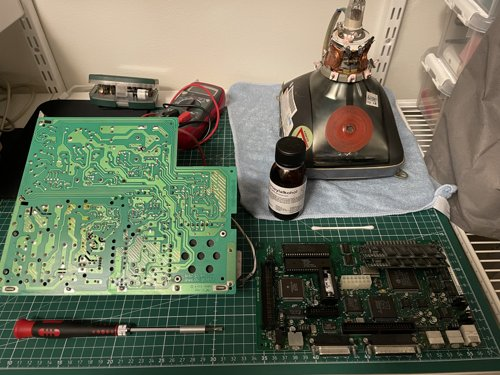
By inspecting the logic board it was clear that the capacitors all leaked, but luckily the battery didn't, and it didn't look as bad as I was afraid it would. I removed the battery and put the board aside. After removing the plastic clips and the paper insulator from the analog board, it looked okay too at the first glance.
I ordered the recap kits for the logic and analog boards:
Macintosh Classic II Rev A & B Logic Board recap kit (tantalum)
Macintosh Classic II Rev A & B Logic Board recap kit (electrolytic)
Macintosh Classic I/II Analog Board recap kits (check voltage and board revision to match yours)
Here is a good resource with references and close-ups on what needs to be replaced:
Classic II Logic Board Rev A (4 ROMs version)
Classic II Logic Board Rev B (2 ROMs version)
Analog Board (same for Macintosh Classic I and II)
Differences between Analog board versions
Schemantics of the Macintosh Classic II (useful for checking continuity between components):
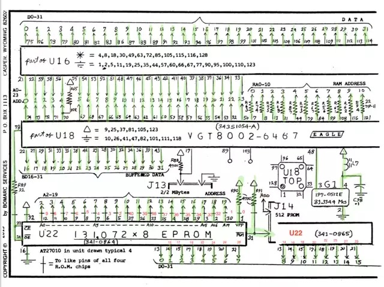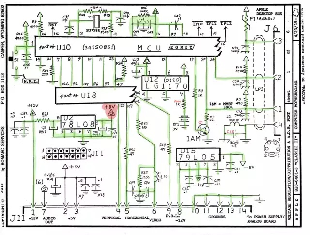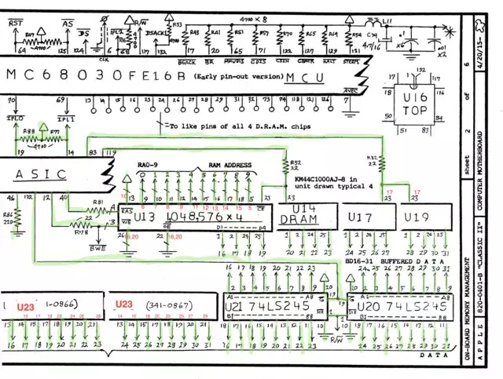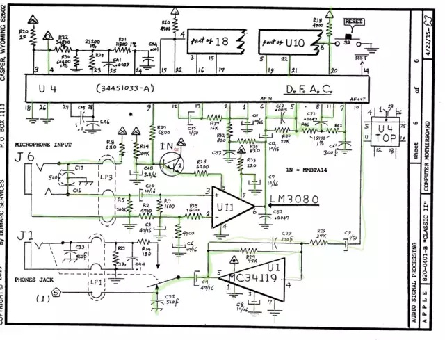
Meanwhile the case could now go to the bathroom for a thorough cleaning. I rubbed it with some dish soap, then let it soak in Vanish, which contains some hydrogen peroxide. After washing it off, it came out pretty nice and clean. There is some yellowing to the case, but it's only apparent at the top where there was a sticker. Overall it doesn't look yellow enough for me to do retrobrighting, maybe in the future. I don't mind keeping my retro gear yellowed to a certain (subjective) level, as it's how they're. I don't expect them to look like brand new. It shows their age and I'm fine with that.
The next step was to remove the floppy drive from the bracket and give it a good clean. It was completely full of dust! I cleaned it with compressed air, a q-tip and isopropyl alcohol. Gave a gentle clean to the heads and removed the old grease gunk from the moving parts, then applied new grease.
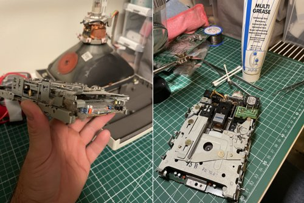
When the recap kits arrived, I started with the analog board as I wanted to see if the logic board will power up if the analog board provides the right voltages. Recapping the analog board is fairly easy as all the capacitors are thru-hole mounted and there is very good access. There are a lot of caps to be replaced though, so it takes time. After desoldering the first few capacitors, it was obvious how badly they're leaking, I could even tell it from the smell. The board was wet from electrolite under the caps, but lucily it did no corrosion damage yet. I was just in time.
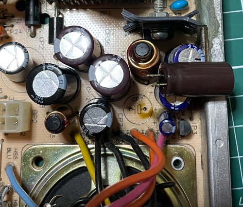
After desoldering the caps I cleaned the board several times with IPA and a soft toothbrush. Then I soldered in the new caps and just to be sure, I resoldered some critical connections around the power cable and the high voltage components, where the old solder looked a bit off. Then I put the board back and tried it out.
The recapped analog board:
It was providing 5 and 12V correctly now, but the logic board still didn't show any sign of life.
Correct voltages:
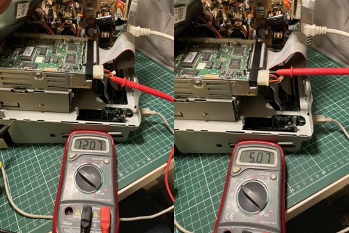
So next, recapping the logic board. It's a more delicate task as all the components to be replaced are surface mounted, very small and the space is tight. I wasn't sure how to remove the old caps to reduce the risk of damage. Some suggest using the hot air gun method to avoid the risk of ripping off the pads from the board. I tried the hot air gun method on an another PCB I used as practice, but I found it was hard to control the heat and easy to melt other plastic components or cause burn damage to the board, so I didn't dare to do it on the real one. I decided to go with the pliers method and after using this method for a while on a few boards now, I can recommend it. If done carefully, it's safe and the chance of damaging the pads on the board is minimal.
The technique I'm using is to gently wiggle the caps sideways with a plier, then in a rotating motion, just a few degrees. Then I can use my finger to wiggle the cap further until it falls off. Often the cap legs break off and stay on the pads, so they can be safely desoldered or picked up with a desoldering suction tool and/or a wick, and the pads on the board remain intact. I cleaned all the pads this way, then with IPA and inspected the board with a magnifying glass to see if any leads got any damage under the caps, but they all looked fine to me.
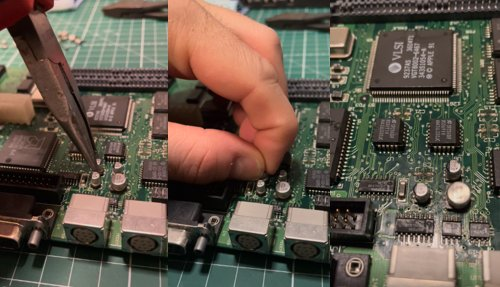
So I decided to put on the new caps. I taped the areas off around the caps with a heat resistand tape, as the space can be very tight, especially around the connectors and it's easy to accidentally touch and melt the plastic. I used a thin tip on the soldering iron and 350 degrees Celsius with tradional leaded solder (as it was used on this board originally). I installed quality tantalum caps (with the exception of the 47uF 16V ones), to minimize future leakage.
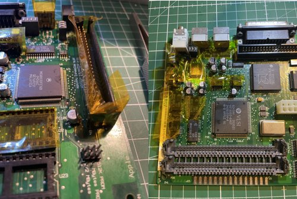
After recapping the board, I installed back the ROMs and RAM modules. I took a picture of the board before removing them, as the ROM socket is 2pin wider than the ROMs, so it's easy to mess it up. The order and orientation of the chips also matters of course. The pins towards the expansion port side of the board should be left empty. The notch of the chips should also face this direction. The chip marked with 341-0261 should be the outer one and 341-0257 the inner one. Double check this, as installing them the wrong way will fry the ROMs.
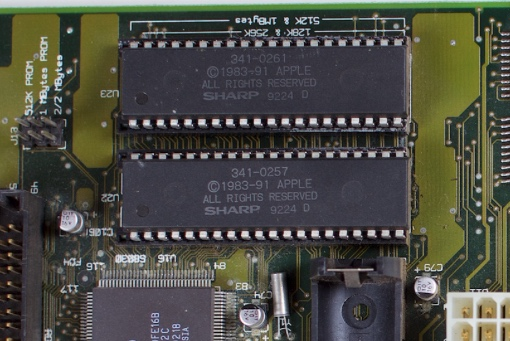
The recapped logic board:
I installed a new battery (LS1420 3.6V Lithium) and turned the Mac on. Just to see vertical bars and still no chime. I tried it several times, sometimes it was just garbage on screen, no bars.
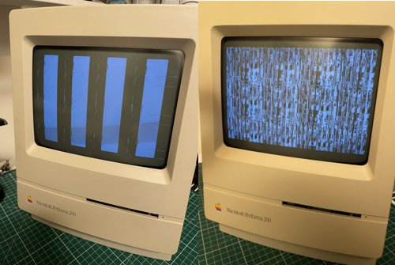
I took the logic board out again and started inspecting it with a magnifying glass for any further damages. I found one leg of the chip next to the floppy connector to be loose. I was not sure if I wasn't careful enough with the cleaning or it came off due to some other reason or maybe corrosion, but I soldered it back on. I also gave the board another clean with IPA on both sides, this time soaking the whole thing in IPA, then contact cleaner, then IPA again.
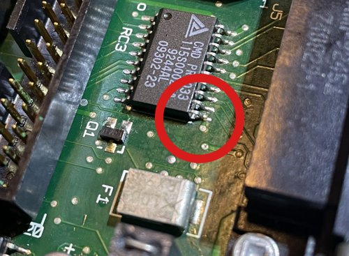
Still vertical bars. I started suspecting it was either the ROM or the ROM sockets, so I checked the socket continuity with a multimeter and it looked fine. At this point I was stuck. I needed a set of ROM chips or an another logic board to test and cross-check things. I looked around on the local second hand market and found a dead Classic II with the same symptoms for the equivalent of 50 USD. I decided to take a look, as getting another logic board or even the ROM chips from abroad would cost significantly more and with this I could potentially get more spare parts (which as later turned out was not a bad idea). Luckily it turned out to be the Rev B (2 ROM chip) version as well, so I picked it up. I took the ROM chips out and installed them in the recapped board, and voila, it booted up perfectly!
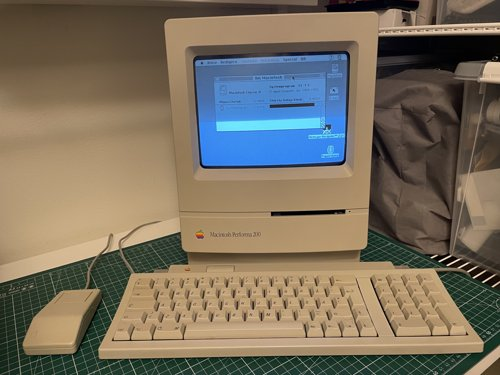
I used it for a few hours and everything looked okay. Even the floppy drive works. The next day however, when I turned it on, it just showed a question mark and couldn't find the hard drive to boot from. I swapped the disk with the other Classic II, and with that it booted up just fine. I assume the old SCSI hard drive just gave up. I'm afraid the other drive might die too sooner or later, so I'm thinking about either finding a new-old stock SCSI drive or a SCSI emulator (like the BlueSCSI). Or maybe both.
Now I have a working Macintosh Performa 200 in a very nice condition, hopefully for many years to come!
I also have a Macintosh Classic II (the one I bought for parts), that could be revived. Which will probably be the next project.


{kind=link}
{kind=link}